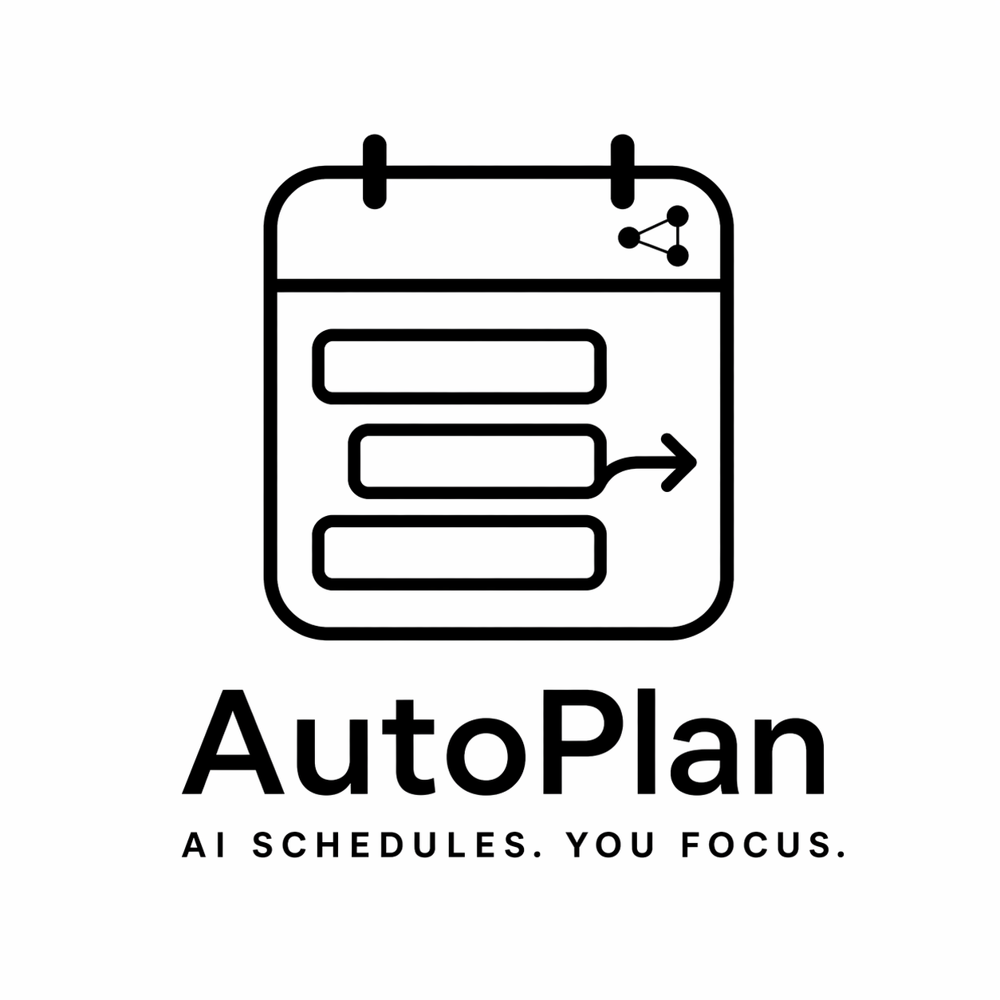

AutoPlan looks at what you have to do and when you're free, then blocks real time on your calendar to get it done. No more staring at a to-do list wondering what to start.
Free to use. One-click app on Mac. Windows & Linux via a quick Terminal install.
Most to-do apps are lists. A list tells you there are ten things waiting. It doesn't tell you when you'll actually do them.
AutoPlan is different. It looks at the time you've already committed — meetings, appointments, the block you keep for the gym, when you sleep — and then fits everything else into the real gaps. If something won't fit before its deadline, it tells you, before the deadline sneaks up.
Everything you've got going on, planned out on one page.
Open the setup window and pick the pieces you use. A calendar — Apple, Google, Outlook, or any CalDAV server. Optional task sources — Canvas, Todoist, Gmail scanning, Google Tasks, Outlook Mail scanning, or Microsoft To Do. A way to hear from AutoPlan — iMessage, Pushover, Slack, email, or ntfy. And one choice: should new tasks go straight to your calendar, or land in the hub for you to approve first? Google and Microsoft each get a built-in wizard that walks you through their respective sign-in flows click-by-click. No docs, no Terminal, no copy-pasted commands — everything happens inside the app.
AutoPlan pulls tasks from wherever they live. Todoist and Microsoft To Do for personal lists. Canvas for assignments. Google Tasks for quick captures. Your inbox: AutoPlan periodically scans unread Gmail and Outlook mail with Claude, extracts the actionable asks ("Can you send the contract by Thursday?"), and files them. You can also just type a task in the hub or tell the AI in plain English — "Finish the Acme proposal, about 90 minutes, due Friday".
AutoPlan treats your classes and meetings as untouchable. It only fills in free time with your work, splitting bigger tasks into focused chunks that fit. Nothing ever overlaps what's already on your calendar.
Every morning AutoPlan sends you a short message about what's on today and what's at risk of not getting done before its due date. You don't have to keep track of anything yourself.
Emails pile up, someone asks for "a quick thing," your calendar looks fine until Thursday at 3 and you realize there's nowhere the work actually lives. AutoPlan holds the time, so what you said you'd do shows up on your calendar like any other commitment.
Reviews, write-ups, drafts, reading, prep, follow-ups — every task has an invisible duration that never quite fits in the gaps between meetings. AutoPlan estimates how long each thing will really take, fits it into the calendar around everything else, and learns as it goes.
The 4pm-on-Friday deliverable that looked fine on Monday now needs three hours you don't have. AutoPlan notices the day you first accept the work — if something won't fit before its deadline, it tells you immediately, not the night before.
AutoPlan is a polite guest in your stack. Every connector below is real code that runs today. Pick what you want, ignore the rest.
Your to-do app, your project tracker, your email, your class portal — or just your typing. Whatever's easiest.
The calendar AutoPlan blocks time on. Your existing events stay untouched.
Daily summary and at-risk alerts.
Check something off in your to-do app and AutoPlan marks the matching task done.
Four things are required. Everything else — email scanning, task sources, choice of notifier — is optional and toggleable anytime.
Mac is a double-click app. Windows and Linux work today via a 15-minute Terminal install — full walkthrough linked below. AutoPlan runs entirely on your machine; nothing is hosted by us.
AutoPlan uses Claude for the friendly message layer and the
email scanner. Sign up free at
console.anthropic.com and add a few dollars of
credit — typical usage runs well under $5/month. You can also
run AutoPlan without the AI and use it as a pure scheduler.
One of: Apple Calendar / iCloud, Google Calendar, Outlook / Microsoft 365, Fastmail, Posteo, Mailbox.org, Nextcloud, Radicale, or any other CalDAV server. The setup wizard has guided sign-in flows for Google and Microsoft; the rest take a username and password.
Pick one: iMessage (macOS only), Pushover (best mobile push, $5 one-time), Slack DM or channel, email via any SMTP provider (Gmail, Outlook, Fastmail, SES, Mailgun, anything), or ntfy.sh push (free, cross-platform, no account needed). AutoPlan uses this for your morning summary and at-risk alerts.
AutoPlan works fine with no connected task source — type tasks into the hub or just talk to the AI. But if you already track work somewhere, connect it and tasks sync automatically:
New tasks can either go straight onto your calendar (Auto) or land in the hub's pending-review queue for you to approve, edit, or remove before they get scheduled (Review first). Pick one in setup — you can switch anytime.
Free. About 40 MB. Takes three minutes to set up.
Download the Mac app →First time you open it, macOS will say "Apple could not verify AutoPlan is free of malware." That's the default warning for any app that isn't signed with a paid Apple Developer account — AutoPlan is safe, it's just not signed yet. Here's the one-time fix:
From now on it opens with a normal double-click. No more warnings. One click per machine, forever.
On Windows or Linux? AutoPlan runs there too — just not as a double-click app yet.
Full Windows walkthrough →15 minutes, copy-paste commands, no prior setup assumed.
Yes. AutoPlan runs entirely on your own computer — there is
no cloud backend, no shared database, no account to create
with us. Your tasks, calendar events, email bodies, and
provider credentials all live in a local SQLite file and
a local .env file. The only things that leave
your machine are calls to the services you asked it
to talk to: Anthropic (for the AI summary and optional email
extraction), your calendar provider's API, your task sources'
APIs, and your notifier. Turn any of them off and that traffic
stops.
No. AutoPlan writes to a calendar you pick (or creates a new one called "Study Blocks"). Your existing events are never edited, moved, or deleted.
Both are supported today. The setup window has a built-in wizard for each — you pick "Google Calendar" or "Outlook / Microsoft 365," follow the numbered steps (every click is shown), and sign in. Each takes about 10 minutes the first time and you never touch it again. The same Google connection also powers Gmail inbox scanning and Google Tasks; the same Microsoft connection powers Outlook Mail scanning and Microsoft To Do.
Gmail and Outlook are both supported. Turn on the scanner in setup, and AutoPlan periodically reads your recent unread mail (or a specific label/category if you want to narrow it), sends each one through Claude with a prompt that asks "what actionable tasks does this email give the reader?", and creates the tasks it finds. You pick the flow: Auto schedules them immediately, Review lands them in the hub's pending queue where you can approve, edit, or remove any of them before they touch your calendar.
AutoPlan reads email only from your local machine. The copy that goes to Claude is one email at a time, sent directly from your computer to Anthropic's API over TLS, with the prompt asking strictly for task extraction. Anthropic doesn't train on API traffic by default. Nothing is forwarded to us (there is no "us" — no server, no cloud backend, no database). You can scope the scanner to a specific Gmail label or Outlook category if you don't want it seeing every email, and you can cap the number of messages per scan. Turn it off anytime.
Yes. Change the radio in the setup window and save — every task source picks up the new mode instantly. Tasks already in the pending queue stay there until you approve or reject them; tasks already on your calendar stay there. The change only affects newly-arriving tasks.
Yes, when you're in Review mode. The hub's pending-review section has Approve, Edit, and Reject buttons per task. Edit opens a modal where you can change the title, duration, deadline, priority, and notes. Approving uses whatever you edited. If you change a duration by hand, it gets pinned — the learning loop won't silently overwrite your judgment.
AutoPlan merges them. A task on Canvas stays distinct from a task in Todoist even if they're similar — each source owns its own items. If a task you approved in Review mode later gets re-synced from its source, it doesn't bounce back into the pending queue; approved means approved. If a source marks a task "completed" upstream (you checked it off in Todoist, submitted an assignment in Canvas, etc.), AutoPlan closes the local copy and removes the calendar block.
Yes. Every time you finish a task, AutoPlan records how long it actually took in a local history table. On every plan cycle, the solver re-estimates each active task's duration based on the median of similar past tasks — same category, same title tokens. If you edit a duration by hand, that override is pinned (the scheduler won't overwrite what you explicitly set). Over a few weeks its estimates drift toward what your work really costs.
Depends on how you want to get your morning summary and at-risk alerts. iMessage — macOS only, silent on your own iPhone because of Apple's own-ID rule, but fine for family members on iCloud. Pushover — most reliable mobile push, $5 one-time per platform. Slack — free, DMs yourself via an incoming webhook. Email — any SMTP provider (Gmail, Outlook, Fastmail, Mailgun, SES). ntfy.sh — free, cross-platform, no account; just a secret topic string you subscribe to in a free phone app. The setup wizard has "where do I find this?" instructions for each one.
It opens in your browser, not on the command line. You pick
one of each category (calendar, notifier, optional task
sources), paste or sign in for each credential, and click
Save. It writes a single .env file on your
computer and creates a Claude agent in your Anthropic account.
Google and Microsoft get dedicated sub-wizards that walk you
through their respective developer consoles click by click —
everything, including OAuth sign-in, happens inside the
AutoPlan window. You can come back and change any setting
later by re-running the wizard.
Anything with a duration and (optionally) a deadline. Client proposals, code reviews, legal prep, content drafts, reading, learning, personal projects, job-search stuff, board-meeting prep, homework, paperwork — if you can put a label on it and estimate how long it'll take, AutoPlan can schedule it. It treats a board deck the same way it treats "write the Q3 OKR doc" the same way it treats a term paper. The only difference is which tool it pulls the task from.
Yes — AutoPlan is pure Python under the hood, so it runs on Windows and Linux today. The only difference is setup: on Mac it's a double-click app; on Windows/Linux you copy four commands into Terminal to install it, and it picks cross-platform providers (ntfy.sh for notifications) automatically. Full walkthrough is in the "On Windows or Linux?" expander under the Download section above.
The friendly morning message and the ability to say "I need to do X" in plain English is powered by Claude, an AI made by Anthropic. You pay Anthropic directly for what you use. A typical user spends well under $5 per month. You can also turn the AI off entirely and use AutoPlan as just a scheduler — it still works.
The scheduling part does. The natural-language AI part needs an internet connection (it's how your Mac talks to Claude). If you're offline, the app still shows your plan and you can add tasks manually.
AutoPlan is open source — every line of code is public and anyone can read it. It's MIT-licensed, which means it's yours to use however you want, free, forever.
Drag the AutoPlan app to the Trash. Your calendar events are on your Mac (not in AutoPlan's cloud, because it doesn't have one), so they stay where they are or you can delete them with one click.